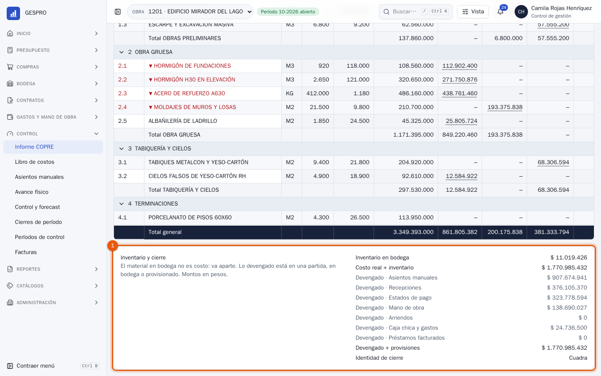
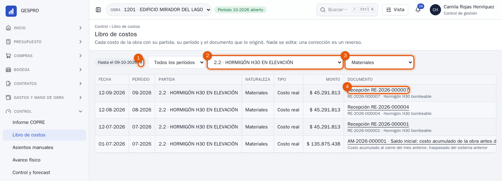
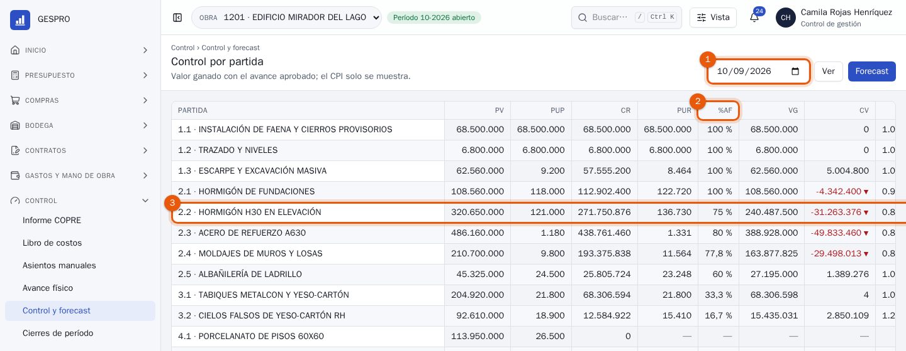
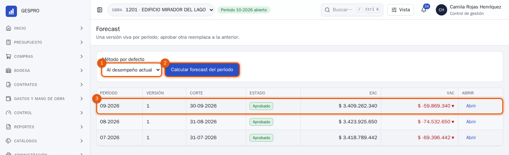
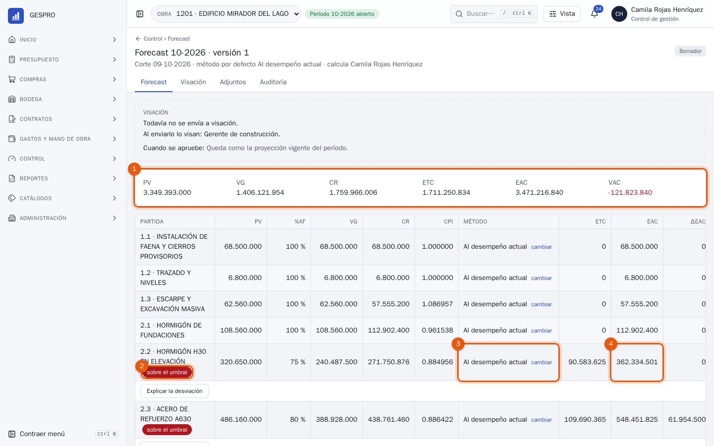
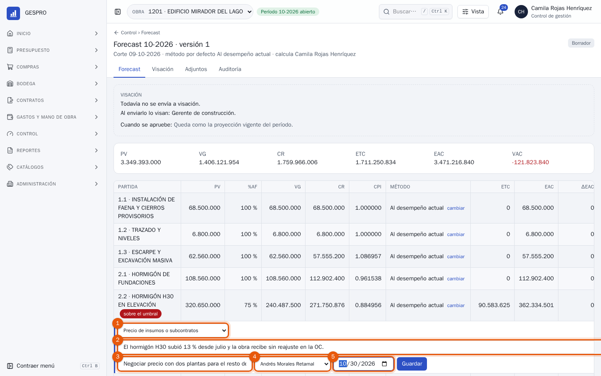
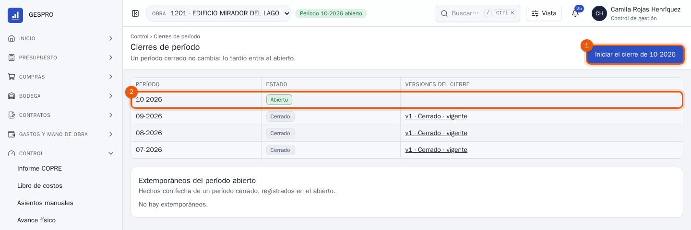
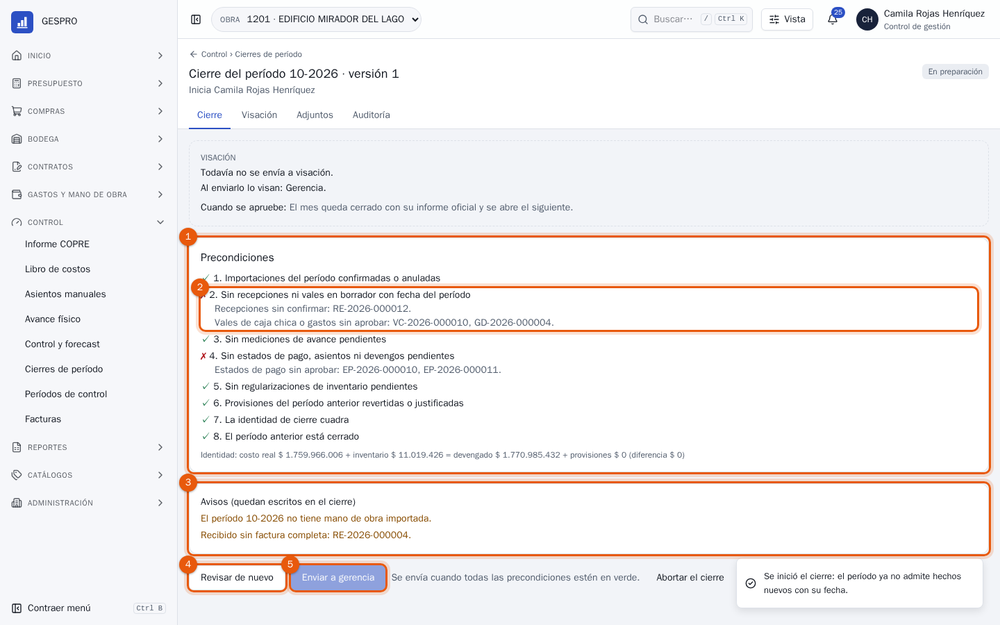
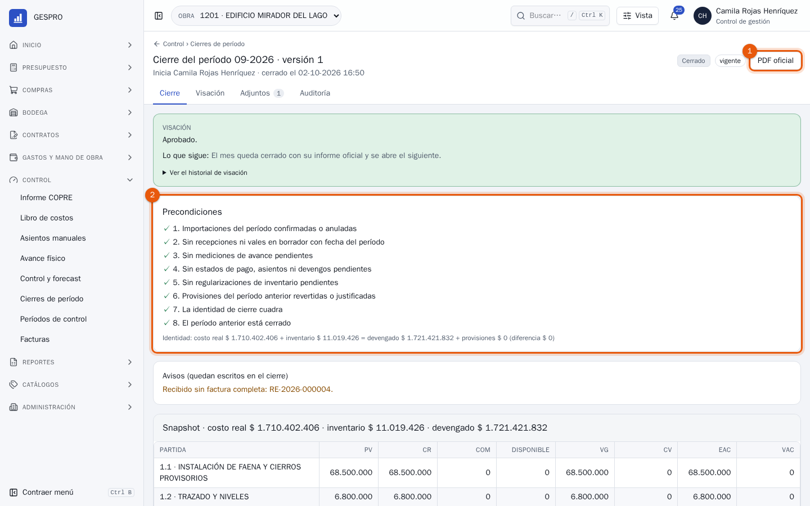
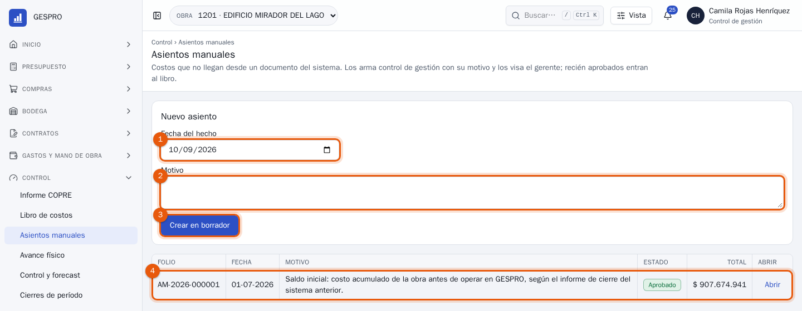

Manual de usuario
Control de gestión en GESPRO
Para quien lleva el control presupuestario de la obra: leer el Informe COPRE, bajar de una cifra a su documento, proyectar el término con el forecast, explicar las desviaciones y cerrar el mes.
- Rol en GESPRO
- Encargado de control de gestión
- Sus pantallas
- Informe COPRE · Libro de costos · Control y forecast · Cierres de período · Asientos manuales
- Ejemplos con
- Camila Rojas · obra 1201 Edificio Mirador del Lago
1El mes de control
Durante el mes, los costos llegan solos: cada recepción, vale, estado de pago, planilla de mano de obra o gasto aprobado escribe en el libro de costos con su partida y su documento. Control de gestión no digita costos; los lee, los proyecta y cierra el mes. Los pasos destacados son los de este manual.
- Costos del mesLlegan desde cada documento aprobado.
- Avance físicoLa obra mide cada partida y el profesional lo aprueba.
- COPRE y controlDónde se está ganando o perdiendo.
- ForecastCuánto costará la obra al terminar.
- DesviacionesCausa, explicación y plan de cada una.
- CierrePrecondiciones, identidad y firma de gerencia.
- Informe oficialEl mes queda congelado y se abre el siguiente.
| Quién | Qué hace en GESPRO |
|---|---|
| Control de gestión | Calcula el forecast y explica las desviaciones, prepara el cierre, arma los asientos manuales y concilia. Lee todo el costo de la obra. |
| Gerente de construcción | Visa el forecast y los asientos manuales; puede reabrir un período cerrado con motivo. |
| Gerencia | Aprueba el cierre del período. |
2El Informe COPRE
Control › Informe COPRE es el control presupuestario de la obra: cada partida con su presupuesto vigente, el costo real por familia, lo comprometido, lo disponible y la proyección. Arriba, la conclusión en una frase.

- Fecha de corte: el informe tal como estaba ese día. Lo posterior no aparece.
- Pesos o UF: en qué moneda se leen las cifras. La proyección (EAC y VAC) va siempre en pesos.
- Solo VAC negativo: deja solo las partidas que proyectan pérdida.
- Columnas: qué familias y cifras ver, y en qué orden. Queda guardado para ti; Generar Excel exporta lo que ves.
- Los indicadores de la obra: presupuesto vigente, costo real, comprometido, disponible, EAC y VAC.
- Una partida en rojo proyecta pérdida (VAC negativo).
- Una cifra subrayada se puede abrir: lleva al libro con los documentos que la forman.
La tabla se desplaza por dentro y el total general queda fijo abajo. Desde 1600 px de ancho, al elegir una partida se ven sus cifras en un panel al costado.

- La identidad de cierre: el costo real más lo que hay en bodega tiene que ser igual a todo lo devengado (asientos, recepciones, estados de pago, mano de obra, arriendos, caja chica y gastos, préstamos) más las provisiones. Si dice Cuadra, ningún peso se perdió entre módulos; si no, el cierre no se puede enviar.
3De la cifra al documento
Al abrir una cifra del COPRE, el Libro de costos se abre filtrado por esa partida, esa familia y esa fecha de corte. Cada fila es un costo con su período y el documento que lo originó.

- El corte que trae desde el COPRE. La × lo quita.
- La partida.
- La familia (naturaleza del costo).
- El documento que originó el costo, para abrirlo: una recepción, un vale, un estado de pago, un asiento manual.
El libro no se edita. Un costo mal cargado se corrige anulando o revirtiendo su documento, y el reverso queda como una fila más con su motivo.
4Control por partida
Control › Control y forecast cruza el costo con el avance físico aprobado: cuánto se ha ganado (valor ganado) contra cuánto se ha gastado, partida por partida.

- La fecha de corte. Ver recalcula; Forecast lleva a las proyecciones.
- %AF: el avance físico aprobado de cada partida. Solo el aprobado cuenta para el valor ganado.
- La partida 2.2: ganó $ 240 millones (75 % de su presupuesto) y gastó $ 272 millones. Su CV es negativo: va gastando más de lo que avanza.
5El forecast del período
El forecast proyecta cuánto costará cada partida al terminar. Hay una versión viva por período: calcular de nuevo crea otra versión, y aprobar una reemplaza a la anterior.

- El método por defecto: al desempeño actual (lo que falta se ejecuta como se ha venido ejecutando) o al presupuesto (lo que falta, al precio presupuestado).
- Calcular forecast del período arma la versión con el corte de hoy.
- Los forecasts anteriores, uno por período, con su EAC y su VAC.

- El resumen de la obra: PV, VG, CR, ETC, EAC y VAC.
- Sobre el umbral: la partida se desvía más de lo que la obra tolera. Hay que explicarla.
- El método de la partida. cambiar permite otro, o un valor manual con su justificación escrita.
- EAC: el costo estimado al terminar, el costo real más lo que falta (ETC). La columna ΔEAC dice cuánto cambió desde el forecast anterior.
Las partidas sin avance medible (profesionales, arriendo de grúa, seguros) se proyectan como lo que falta del presupuesto, sin método.
6Explicar las desviaciones
Cada partida sobre el umbral pide una explicación antes de enviar el forecast. Queda escrita en el forecast y en el cierre, y es lo que gerencia lee primero.

- La causa: precio de insumos o subcontratos, rendimiento, cambio de alcance, retrabajo, clima o terceros, error del presupuesto u otra. Permite comparar obras.
- Qué pasó, en una frase con cifras.
- El plan de acción.
- El responsable del plan.
- La fecha comprometida. Guardar y sigue con la próxima partida.
Con todas explicadas, Enviar a visación lo manda al gerente de construcción. Al aprobarse queda como la proyección vigente del período, la que muestran el COPRE y el panel de la obra.
7Cerrar el período
El cierre congela el mes: sus cifras ya no cambian y lo que llegue tarde entra al período abierto como extemporáneo. Se inicia en Control › Cierres de período.

- Iniciar el cierre del período abierto. Desde ese momento el período ya no admite hechos nuevos con su fecha.
- Cada período con su estado y las versiones de su cierre.

- Las ocho precondiciones. Debajo, la identidad de cierre con sus cifras.
- Una precondición en rojo nombra los documentos que la bloquean: hay que aprobarlos, confirmarlos o anularlos.
- Los avisos no bloquean, pero quedan escritos en el cierre (por ejemplo, lo recibido sin factura).
- Revisar de nuevo vuelve a verificar después de resolver lo pendiente.
- Enviar a gerencia se habilita con todo en verde. Si el mes no se puede cerrar todavía, Abortar el cierre devuelve el período a abierto.

- PDF oficial: el informe del mes tal como se aprobó.
- Las precondiciones con que se cerró. Debajo, el snapshot de cada partida.
Un período cerrado solo se reabre con motivo, por el gerente de construcción, y el nuevo cierre queda como otra versión.
8Asientos manuales
Un asiento manual carga un costo que no llega desde un documento del sistema, como el saldo inicial de una obra que entró a GESPRO a mitad de camino. Lo arma control de gestión con su motivo y lo visa el gerente; recién aprobado entra al libro.

- La fecha del hecho. Si es de un período cerrado, entra al abierto como extemporáneo.
- El motivo, que queda en cada línea del libro.
- Crear en borrador abre el asiento para agregar sus líneas: partida, familia y monto.
- Los asientos de la obra con su estado y total.
9Siglas
| Sigla | Qué es |
|---|---|
| PV | Presupuesto vigente: el original más sus modificaciones aprobadas. |
| CR | Costo real: lo devengado en la partida hasta el corte. |
| COM | Comprometido: órdenes y contratos emitidos que todavía no se vuelven costo. |
| %AF | Avance físico aprobado. |
| VG | Valor ganado: PV × %AF. |
| CV | Variación de costo: VG − CR. Negativa, se gastó más de lo que se avanzó. |
| CPI | Índice de desempeño de costo: VG / CR. Bajo 1, cada peso rinde menos. |
| ETC | Lo que falta por gastar para terminar. |
| EAC | Costo estimado al terminar: CR + ETC. |
| VAC | Variación al término: PV − EAC. Negativa, la partida terminará con pérdida. |
10Preguntas frecuentes
Llegó una factura de septiembre con el mes ya cerrado.
Entra al período abierto como extemporánea y aparece en Cierres de período › Extemporáneos. El cierre de septiembre no cambia.
¿Por qué el COPRE y el control por partida muestran costos distintos?
Revisa la fecha de corte de cada uno. Con el mismo corte, el costo real es el mismo: los dos leen el mismo libro.
Cambié el método de una partida. ¿Se pierde lo anterior?
No. El forecast guarda el método aplicado en cada versión, y la versión aprobada anterior queda intacta.
La identidad de cierre no cuadra.
Algún costo se escribió sin pasar por su documento, o un módulo devenga sin informarlo. No se corrige a mano: avisa al administrador de GESPRO con la diferencia que muestra el cierre.
¿Puedo cerrar sin el forecast aprobado?
Sí, pero queda como aviso en el cierre y gerencia lo verá al aprobarlo.